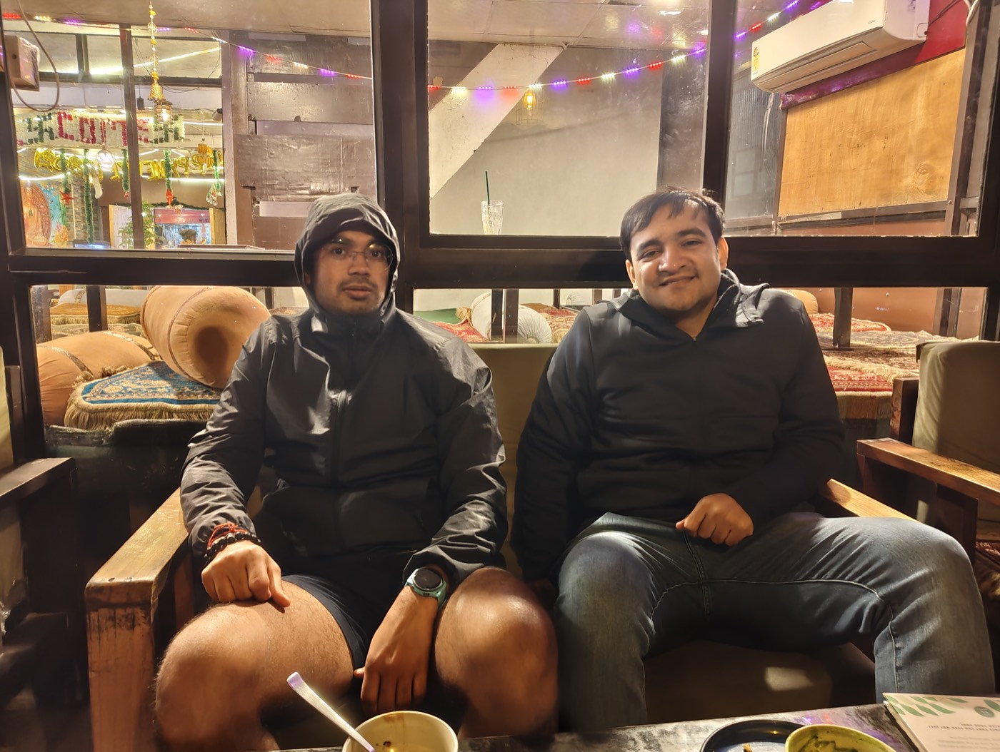

A few partner seats · onboarded personally
Powerful AI in your pocket.
Still just a chat box.
You're not short on effort - you're short on a place that remembers. The payment someone promised, the lead going cold, the "kal pakka" you never followed up on: they don't slip because you're careless, but because nothing wrote them down. Ek-ai reads your WhatsApp, mail and calendar, remembers every promise, and hands you one short brief every morning - the three things that matter, the money that's stuck, the people waiting on you.
What you don't pay for in money, you pay for in time. Ek-ai is built to hand that time back.
Who it's for
Founders and operators still doing their own sales, follow-ups, collections and coordination - the ones for whom a dropped thread is a lost deal or a delayed payment. If you already have a full ops team and a CRM you actually keep updated, you don't need us yet. If your business lives in your head and your chats, you do.
How it works
Observe. Remember. Focus.
Observe
It reads across the places your business actually happens - WhatsApp, Gmail, your calendar - and more as you connect them. Quietly, on your side.
Remember
Every commitment, payment promise and open thread lands in a memory that keeps your goals and priorities in view - and forgets nothing.
Focus
It weighs everything against your goals and surfaces only what needs you - the rest stays out of your way. One point of focus, every day.
What that gives you
Brief
One short email, waiting when you wake up: today's three priorities, money outstanding, who's waiting, calendar traps. Two taps to say "done" or "not now" - it learns.
Draft
When something needs a reply, it writes one in your voice. You read it and press send - Ek-ai can't send anything without you.
Think with you
Talk through a decision, a knotty customer, a plan for the week - anytime, in plain chat. It already knows the context, so you skip the recap.
Plus a Friday punch list to close the week, and a Sunday check-in that keeps its memory sharp.
Why it's different
AI as a system - not a chat box.
Proactive
You don't go to it. It comes to you, in the tools you already live in - before you have to remember to ask.
Real memory
A living memory of your north star and shifting priorities, drawn from your real conversations - pruned as things change so it stays sharp, not bloated.
Plugged into your work
It connects to where the work is. Reading your WhatsApp - where most Indian business really happens - is one example of how far that reach goes.
You stay in control
It observes and drafts. It can't send without you. The judgment calls stay yours; the remembering and the busywork don't.
A day with Ek-ai
You open your phone. One email: three priorities, ₹62,000 outstanding across two clients, a lead waiting two days, GST due in five.
Tap ✅ on the call you already made from the car yesterday. Tap 🔕 on a conference invite. Neither nags you again.
"Draft a friendly follow-up to the new lead." Thirty seconds later it's in your voice. You change one word and send.
A ten-minute check-in. What moved, what's gone stale, what to let go. Ek-ai stays sharp because you tune it in plain language.
Privacy & control
Built to be trusted with the personal stuff.
Not more noise, not more notifications, not more tabs.
Less - but the right less. Clear, unhurried, pointed at your priorities.
Your memory is yours
Everything Ek-ai remembers lives in plain files, on your device, that you own. Not a database we control. Not training data. Yours, forever.
It drafts. It can't send.
When something needs to go out, Ek-ai writes the draft and hands it to you. It can't send on WhatsApp, can't send an email, can't post anywhere - the send tools are switched off at the system level. Not a setting you trust us to leave alone. It's just off.
What actually leaves your device
What Ek-ai reads - your messages, mail, notes - stays on your device. It isn't uploaded for storage and isn't used to train anything. One exception, said plainly: your morning brief is emailed to you, and email has to pass through a delivery service to reach your inbox. That's the only thing that leaves.
What it can't do yet
- Reads text - not WhatsApp voice notes, images or attachments.
- Watches one inbox, not several stitched together.
- Runs on the one computer it's set up on.
We'd rather show you the edges than oversell a demo.
The pilot
A few seats. Onboarded slowly, on purpose.
We're taking on a small group of founders as design partners - free, for now. We set everything up with you and stay close while you use it. In return, we ask for your honest reactions.
Apply for a pilot seat →Share your email and WhatsApp number - we'll take it from there.
What you'll need: a computer that stays awake during the day, and an AI-assistant subscription - we'll help you sort the details.
Questions worth asking
Does it send messages or emails as me?
No - it can't. When something needs to go out, it writes a draft and hands it to you. You send it yourself, so you stay in the loop on everything that leaves in your name.
Can it reply for me on WhatsApp?
No - WhatsApp is read-only. It reads your chats to track what matters, but sending is switched off at the system level, even if you ask. Want a reply? Ask it to draft one; you send.
Where does my data live?
What it reads stays on your device and isn't used to train anything. The one exception is the brief email it composes, which is handed to a delivery service so it can reach your inbox - that's just how email works. Everything it remembers stays in files you own, on your device.
Is there somewhere for my most private notes?
Yes - a separate, locked file Ek-ai never opens on its own and never quotes in anything it shows you. It's read only if you ask for it by name.
What can it connect to today?
WhatsApp, Gmail and Google Calendar are live today - that's what the pilot runs on. More connections get wired as pilot partners need them; we'll always tell you exactly what's connected and what isn't.
Do I need to be technical?
No. Setup is guided and we do the technical parts with you. You'll only handle the human steps - signing in to your accounts, approving a permission, scanning a WhatsApp QR code.
What do I need to run it?
A computer that stays awake during your day and a subscription to an AI assistant (Claude or Codex). We'll help you get set up during onboarding.
What if I stop?
You keep everything. Your memory lives in plain files on your device - open them in any editor, take them anywhere. Nothing is locked to us.
What the name means
Ek-ai is short for Ekagra-AI.
Ekāgra - single-pointed focus. That's the feeling we're building for: one point of attention, on the thing that matters most.
About us
Friends from BITS.
Siddharth has spent about a decade building software and AI products, most recently as a founding product manager. Adi has spent many years building and running a business. We both wanted to build something of our own, and we started with a problem we kept seeing up close: people have powerful AI in their pocket and still use it mostly to chat. Ek-ai is our attempt at something more useful than that. We're early, and we'd like a few people to build it with us.
A line we keep coming back to:
The progressive mind is seen at its noblest when it strives to elevate the whole race to its own level - whether by sowing broadcast the image of its own thought and fulfilment, or by changing the material life of the race into fresh forms intended to represent more nearly that ideal of truth, beauty, justice, righteousness with which the man's own soul is illumined. Failure in such a field matters little; for the mere attempt is dynamic and creative.
